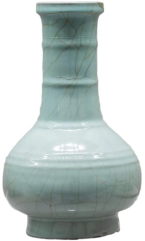

官窑粉胥釉弦纹瓶
南宋 故宫博物馆

这件南宋官窑粉青釉弦纹瓶，高33.6厘米，口径9.9厘米，足径14.2厘米。
瓶洗口，长颈，圆腹，高圈足，颈至腹部凸起7道弦纹，圈足两侧各有一长方形扁孔可供穿带。通体施粉青釉，釉层肥厚，釉面满布开片纹，纵横交错。釉面纹片葬列，愈显高洁古雅。开片是因釉与胎的收缩率不一致在培烧后冷却时形成一种釉裂胎不裂的现象。
此瓶仿汉代铜器式样，线条简洁雅致，凸起的弦纹改变了造型的单调感，增强了器物的装饰性。釉色给人以凝厚深沉的玉质美感，是宋代官窑瓷器的代表作品。